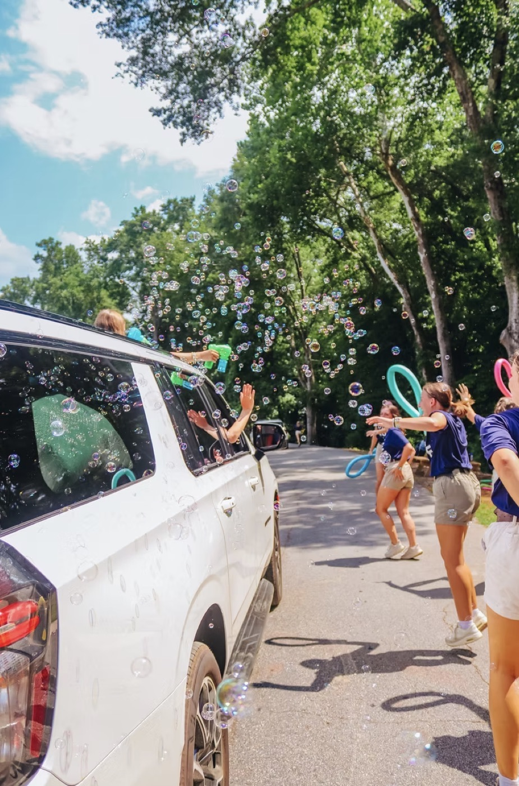
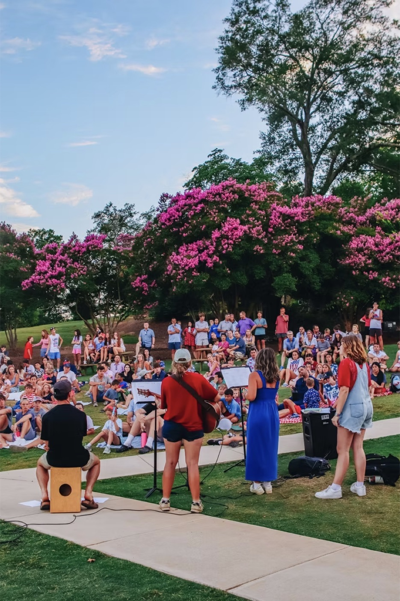
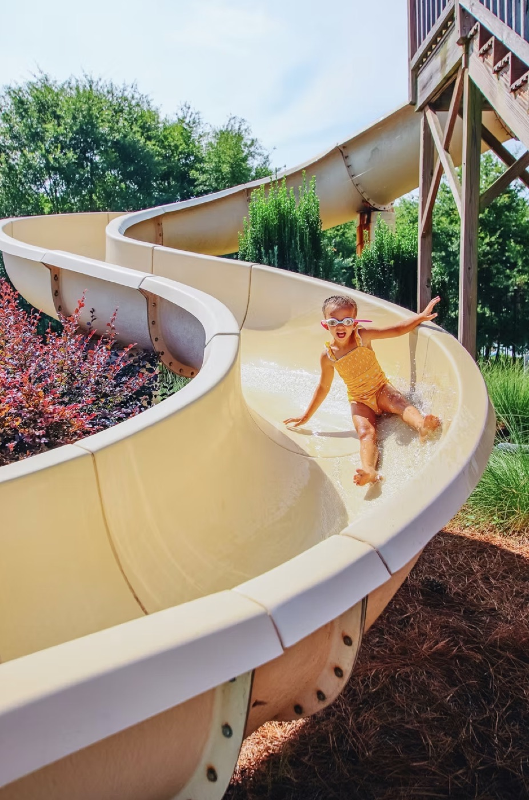
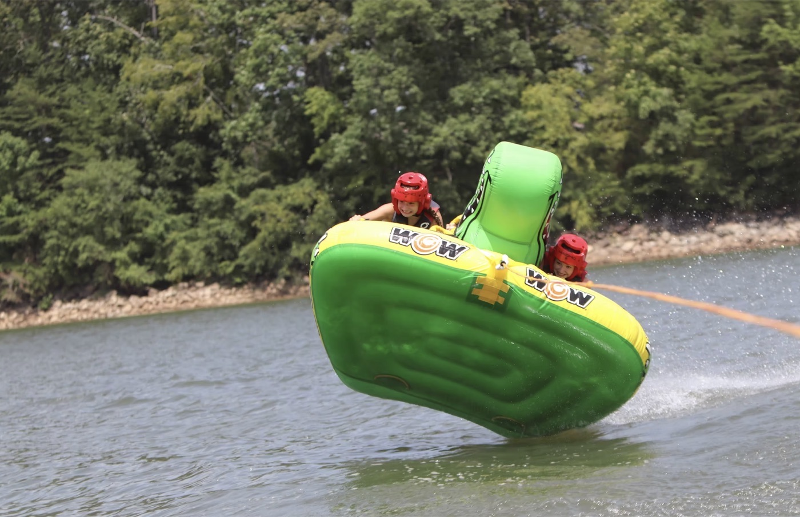
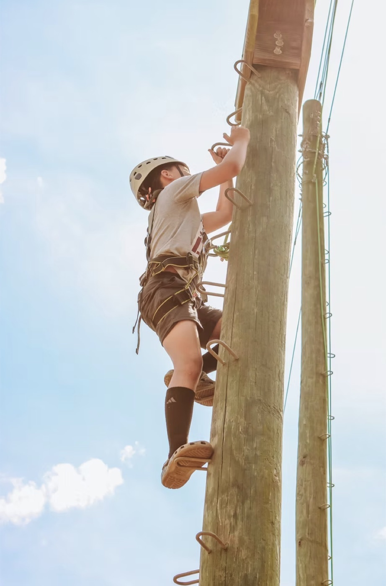
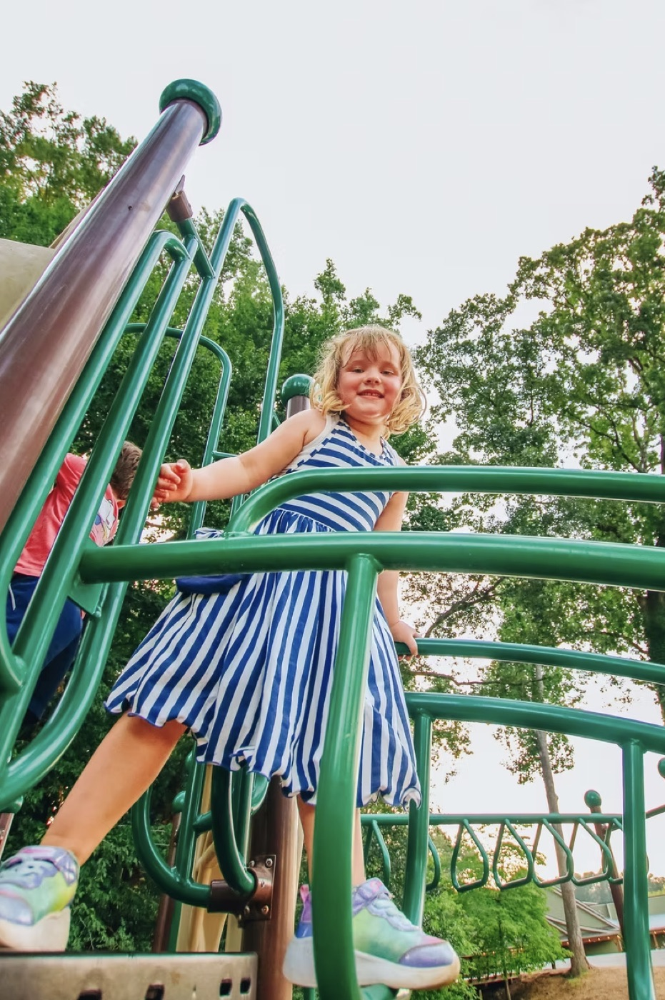
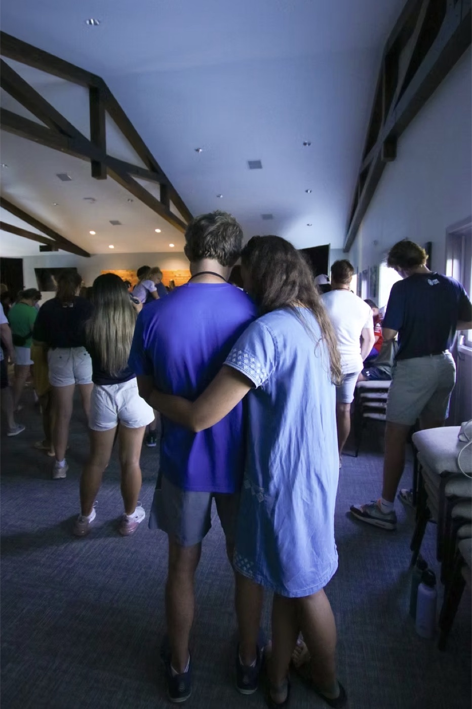
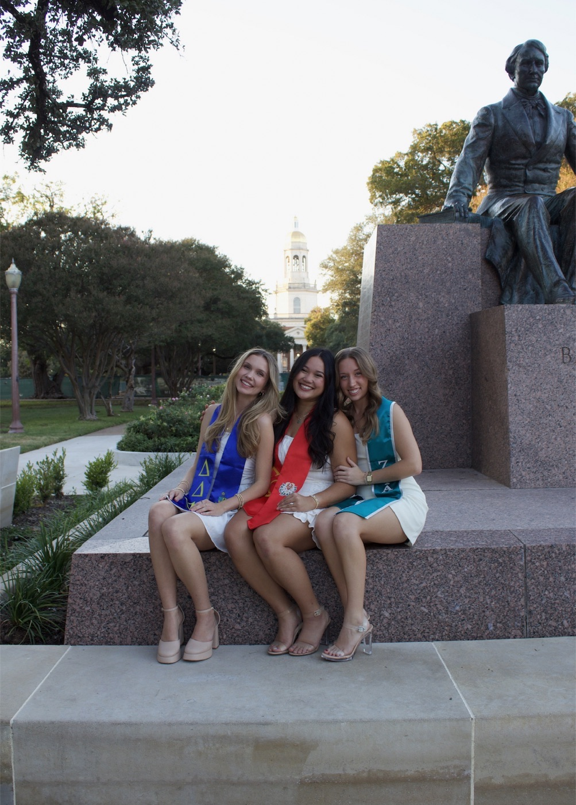
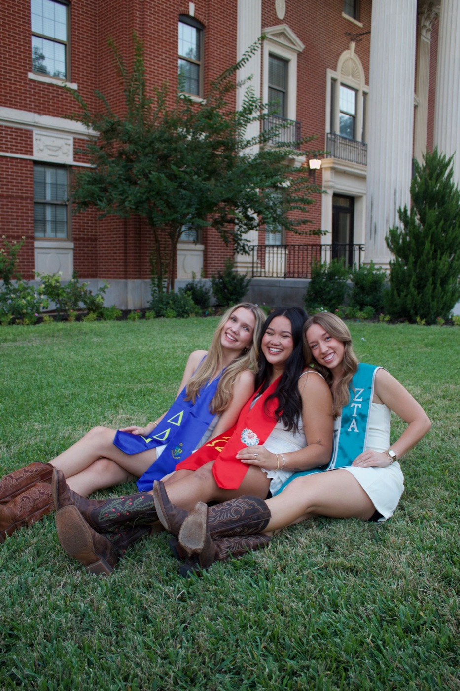

Photography
A true passion of mine is capturing meaningful moments for others to enjoy. Through various photography projects, I’ve worked with structured deadlines, client expectations, and production quotas, all of which strengthened my ability to deliver high-quality work under pressure.
I love using my creativity to craft visual stories, and over time, I’ve gained a strong understanding of branding, marketing, and how to communicate identity through the lens. My photography experience has not only sharpened my technical skills, but it has also deepened my appreciation for how imagery shapes perception, emotion, and engagement.

Every photo is a magnet. Drag them around.












Pine Cove
Five weeks each summer of camp media: 250 photos captured, edited, and uploaded daily to the camper app.
Senior sessions
Independent senior portrait shoots for Baylor students.